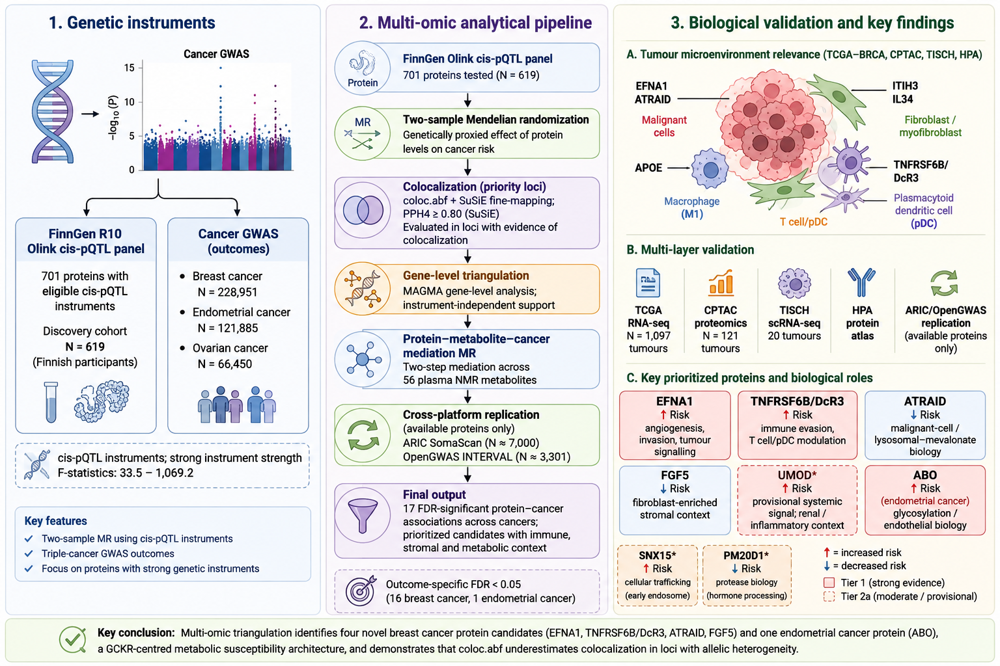
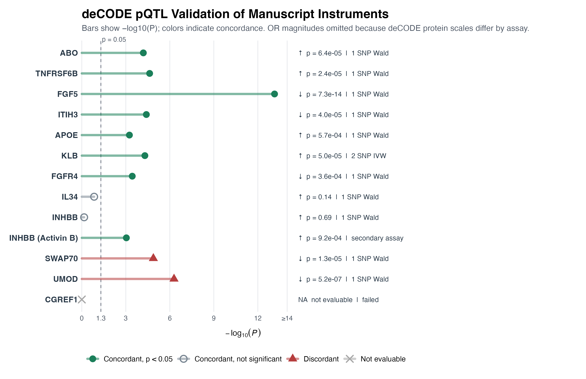

Integrative proteogenomic and metabolomic triangulation prioritizes genetically supported circulating protein pathways in breast cancer susceptibility
Study: Using cis-protein quantitative trait loci (cis-pQTLs) from the FinnGen Olink proteomics platform (N = 619) as genetic instruments, we performed a proteome-wide two-sample MR screen of ~2,900 assayed proteins against breast cancer (BCAC GWAS, N = 228,951). 701 proteins met cis-instrument criteria. After outcome-specific harmonization, 504 / 614 / 582 proteins were analysed for breast / endometrial / ovarian cancer (654 unique proteins). Seventeen protein–cancer associations survived Benjamini–Hochberg false discovery rate correction (FDR < 0.05). Candidate proteins were subsequently triangulated through colocalization (coloc.abf and coloc.SuSiE), gene-level GWAS enrichment (MAGMA), ER-subtype stratification, metabolic mediation analysis, immune tumour microenvironment profiling, and cross-platform pQTL sensitivity analysis (ARIC SomaScan, deCODE, OpenGWAS).
Proteins were classified into four evidence tiers based on the breadth of corroborating evidence:
| Evidence Tier | Definition | Candidate Proteins |
|---|---|---|
| Tier 1 (High confidence) |
FDR-significant MR + strong colocalization by coloc.abf or coloc.susie. | TNFRSF6B, FGF5 (robust) EFNA1‡, ATRAID‡ (LD-sensitive, see below) Comparator: ABO (Endometrial) |
| Tier 2a (Moderate/Provisional) |
FDR-significant MR + ABF-only colocalization (PPH4 ≥ 0.80) or MAGMA Bonferroni-significant gene-level support. | UMOD, SNX15, PM20D1 |
| T2b — Moderate confidence | MR + partial colocalization support | APOE, TSPAN8 |
| T2c — MR-supported | MR signal only; colocalization not significant | 7 proteins |
- MR Screen — Proteome-wide volcano plot of the 504/614/582 protein–cancer tests analysed for breast/endometrial/ovarian cancer (1,700 total; 701 cis-instrumentable proteins).
- Forest Plot — Effect estimates (odds ratio, 95% CI) for all 17 FDR-significant associations.
- Colocalization — PPH4 posterior probabilities from coloc.abf and coloc.SuSiE.
- ER Subtypes — ER-positive vs ER-negative subtype stratification.
- MAGMA — Gene-level GWAS enrichment confirming overlap.
- Cross-platform pQTL sensitivity — Cross-platform pQTL sensitivity analyses using deCODE, ARIC, and OpenGWAS.
- Immune — Tumour immune microenvironment correlations.
- Evidence — Integrated multi-layer evidence table.
- Druggability — Open Targets druggability assessment.
- Mediation — Metabolic mediation analysis identifying indirect pathways.


Major Lineage

Minor Lineage





- Protein-Altering Variant (PAV) Screen: Annotated the highest-tier instruments and their LD proxies (Supplementary Table 22).
- GTEx cis-eQTL Concordance: Evaluated cis-eQTL concordance in breast mammary tissue (Supplementary Table 23).
- Palindromic-Variant Sensitivity: coloc.abf robustness across all 17 loci is unaffected by exclusion of palindromic variants (largest ΔPPH4 = 0.046; Supplementary Table 24).
- LD-Stability Sweep (coloc.SuSiE): The primary analysis reproduces exactly, but across six LD specifications — including one restricted to unrelated European-ancestry founders, to test whether related individuals in the reference panel drive the instability — TNFRSF6B is stable (0.883–0.909) whereas EFNA1 ranges 0.594–0.965 and ATRAID is bimodal (~0.997 or ~0.0005). Restricting to unrelated founders left all three estimates essentially unchanged, so related individuals are not the driver. EFNA1 and ATRAID are therefore more provisional than coloc.abf-anchored Tier 1 proteins (Supplementary Table 25).